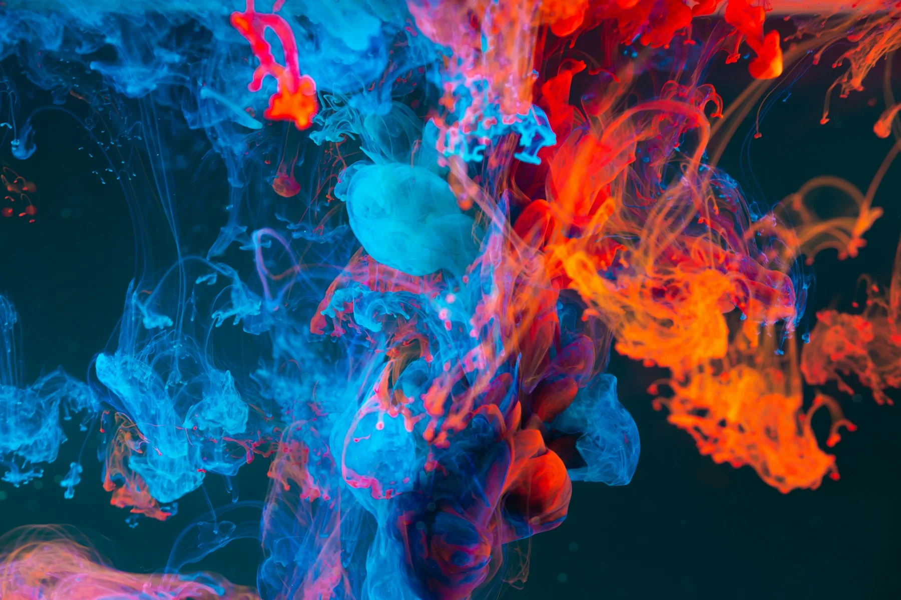

Festival de música electrónica
Nocturna
Una identidad que cambia de forma con el sonido.
Tipografía cinética, un rojo que satura y un sistema modular que se adapta del cartel al escenario. Una marca para la noche que no necesita gritar.
Buenos Aires, AR12 — 14 diciembre
